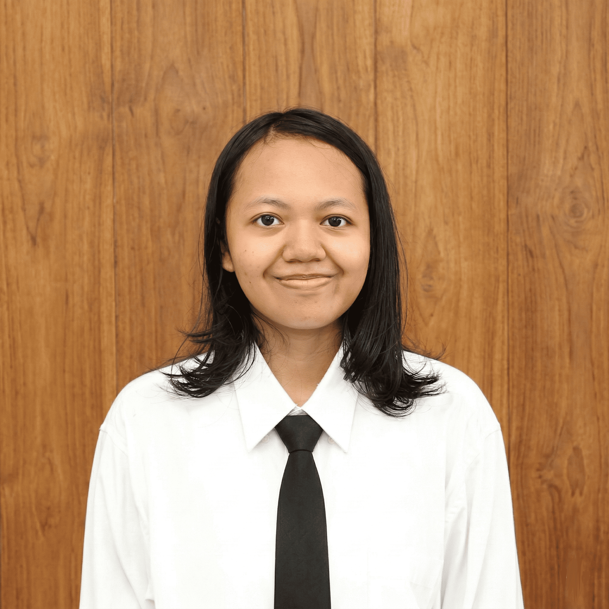

Kayla Syahirah Khansa is a management student at Universitas Jember, Indonesia.
She works across English proficiency at C1 level, Mandarin HSK 2, and the intersection of systemic reasoning with real-world entrepreneurial practice.